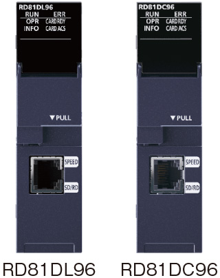
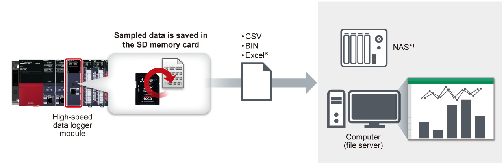
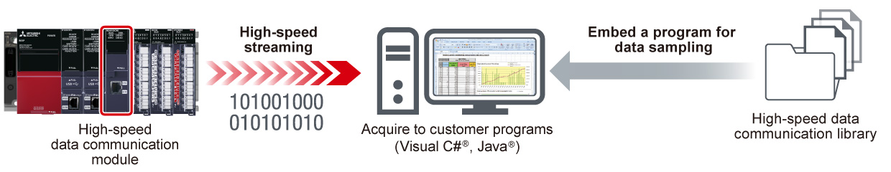

Controllers MELSEC iQ-R Series Product features -Advanced information-

High-speed data logger module, High-speed data communication module
The modules enable high-speed data sampling in synchronization with the programmable controller scan time and send data to the general software or customer programs.

Features<sup>Utilize sampled data on general software</sup><sup>RD81DL96</sup>
- Directly port to Excel®/CSV
- Record in the SD memory card
- A single module can output Excel® data. Data can be accumulated on Excel® and visualized in an easy to understand format such as a graph
- Logging data can be saved in the SD memory card and transferred to the file server
-
Recommended for the following customers
- Utilize general software (Excel®, CSV, etc.)
- Easily analyze the output data

- *1.Network Attached Storage
Utilize data in coordination with customer programsRD81DC96
- High-speed streaming
- Easy programming
- Production data streamed at high speed can be transferred to customer programs
- Since successive data acquisition into programs is possible, it is useful for frequent data sampling
- Utilizing available Visual C#® and Java® class libraries reduces programming time
-
Recommended for the following customers
- Transfer a large-capacity data to the IT system in real-time
- Apply sampled data to various applications

Specifications<sup>High-speed data logger module, high-speed data communication module specifications</sup>
| Item | RD81DL96 | RD81DC96 |
|---|---|---|
| Accessible CPU module | MELSEC iQ-R Series (direct, remote), Q Series (remote), L Series (remote) | |
| Data sampling interval | ||
| High-speed data sampling (ms) |
|
|
| General data sampling (s) |
|
|
| Amount of sampled data | ||
| High-speed data sampling |
|
|
| General data sampling |
|
|